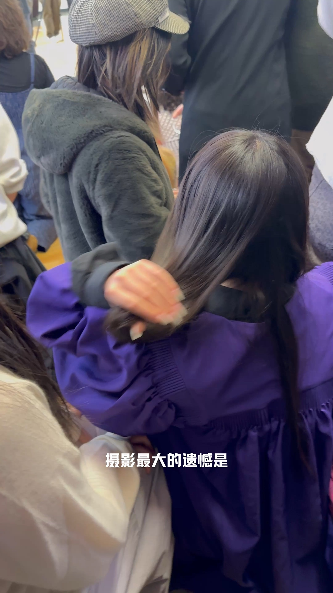
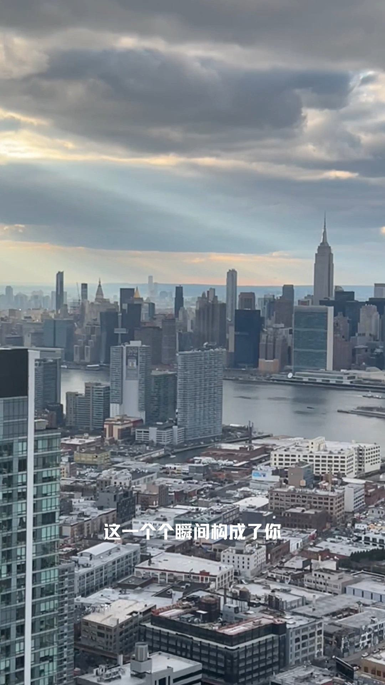
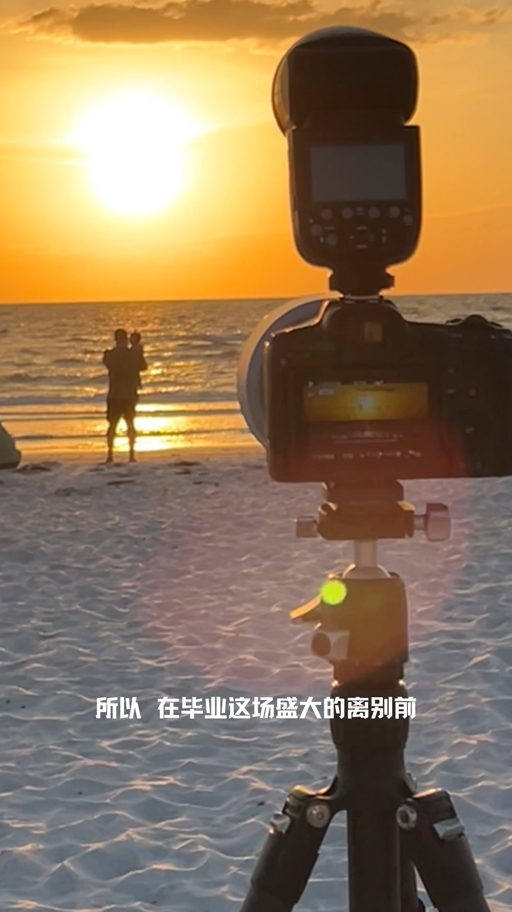
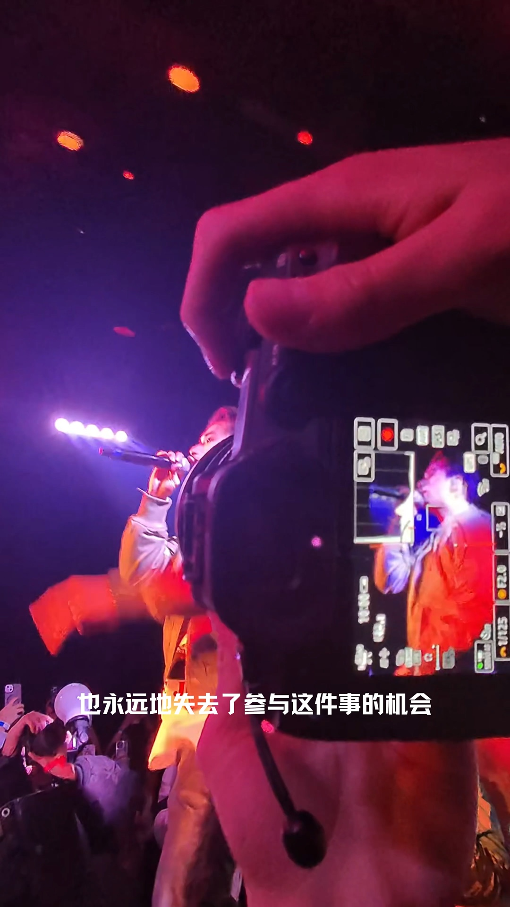
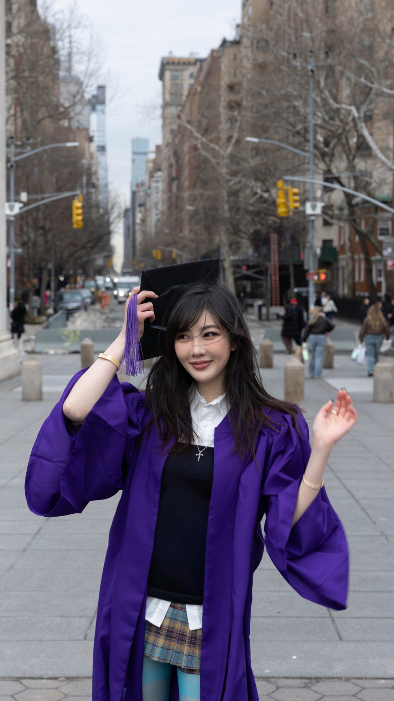

01 / ESTABLISH留住人物情绪
原片 00:00 · 人物互动
建议练习 3 秒，留住自然的情绪。


一段真实的创作，
一份可以照着开始的拍摄计划。
为有表达欲、还没有镜头语言的新手创作者，补上「看」与「拍」之间的一步。
反复回看 → 自己猜镜头
切换相机 → 忘记动作
拍完才发现 → 素材不够
看懂结构 → 调整拍摄单
一镜一提示 → 边拍边确认
保留自己的素材 → 完成故事
设计假设，不是已验证的增长结论。目标是帮助学习拍摄，而不是复制他人内容。
从「摄影最大的遗憾」出发，
练习记录你自己的毕业记忆。
LIVE PROTOTYPE • 点击手机内的按钮开始
从原片手动选出的四个片段，
不是自动切分结果。建议拍法与时长均可修改。

01 / ESTABLISH原片 00:00 · 人物互动
建议练习 3 秒，留住自然的情绪。

02 / DETAIL原片 00:06 · 拍摄现场
建议练习 3 秒，让动作进入画面。
原片 00:18 · 城市环境
建议练习 4 秒，给故事一点呼吸。

04 / PAYOFF原片 00:33 · 毕业人像
建议练习 3 秒，以人物收束故事。
从视频的分享面板进入「跟拍学习」，不另建一个需要寻找的工作台。
镜头顺序、时长和拍摄提示可编辑。原片始终能回看；分析失败可以重试或使用预设。
旧版本先保留，新版本确认后才替换。每个镜头独立完成，离开也能恢复本地草稿。
| 已有方向 | 主要关注 | 本概念的探索边界 |
|---|---|---|
| Duet / Stitch / Add Yours | 与现有内容互动、接续或参与话题 | 参考 → 可编辑的现实拍摄步骤 → 用自己的素材完成独立作品。 能力存在重叠；不是「市场空白」声明。 |
| Studio AutoCut / 剪辑模板 | 组织、编辑已有素材 | |
| CapCut Storyboards / AI 创意工具 | 计划、脚本与创作辅助 |
ShotPAI 中 TransNetV2 / Core ML 的镜头切分思路可用于候选边界。切分≠理解拍摄意图；语义提示仍需要独立模型与人工确认。
此页面使用创作者授权的真实视频，镜头窗口和提示由人工选定。Take、拍摄和发布仍为模拟；没有接入 TikTok、AI 推理或真实摄像头。原有 App 未在此修改。
下一轮邀请新手完成相同拍摄任务，观察首次开拍时间、独立完成率、提示理解和成片结构。先验证行为，再讨论增长。